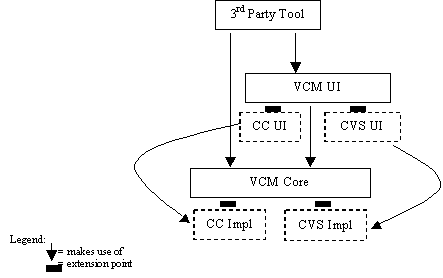

Back to Archived Releases
| VCM 2.0 Story | |
| by Kevin McGuire
The intention of this document is to describe the overall direction that VCM (Version Configuration Management) is taking in Eclipse, targeted at our 2.0 release. It provides a first look into the overall design goals and strategy we are taking, and includes a first cut of an important interface. The goal is to initiate discussion in the open source community, and to garner feedback from repository vendors looking to integrate with Eclipse. GoalsThe goal of the VCM support in the Eclipse Project is to provide a mechanism by which repository vendors can plug in adapters to integrate the full, rich, functionality of their repository solution into the Eclipse workbench in a first class way. The problem with many IDE integration approaches today is that they provide only a simple and generic level of support that we feel is an unacceptable level of integration. It does not allow repository vendors to showcase the unique benefits of their offering and treats repository/IDE integration as a second class afterthought. By contrast, we believe it is critically important that the vendor be able to integrate their product's workflow model into the overall Eclipse user experience. Our success will be measured by the number of repositories that we can support, by the richness of this support, and by the degree of VCM integration afforded to third party plugins.Eclipse VCM 1.0While we felt we achieved reasonable CVS support in 1.0, through that process we understood the places where our model would not translate well to other repository types. Thus it was a difficult but an absolutely necessary decision to hold it back from API status in 1.0. The architecture for 2.0 is significantly different than that in 1.0. For one, the API is smaller. Second, and most importantly, the workflow in VCM 1.0 was specific to Eclipse and difficult to customize for a given repository. This led to numerous fundamental problems in compatibility between the abstract Eclipse VCM model and repositories with rich models. What resulted was a sort of “least common denominator” experience that was unsatisfactory to anyone who was already familiar with the underlying repository model. Third, in many places VCM 1.0 was trying to be “too helpful” by providing numerous built in mechanisms. While this potentially allowed rapid integration for some repositories, in general one ended up having to fight this helpfulness due to subtle semantic differences between repositories. By contrast, in VCM 2.0 the repository integrator will always be “in charge”.ApproachOur technical approach to this problem has two parts - a common base integration API, together with an extension mechanism. Repository vendors implement a simple compact base API, which provides basic functionality. The vendor then uses the extension mechanism to provide a higher level of integration to achieve the rich integrated experience provided by the unique benefits of the repository/configuration management/workflow solution. This entails writing tool plugin views, reusing common views provided by Eclipse, and integrating vendor specific function into the appropriate extension points in Eclipse. This approach is consistent with the overall tool integration strategy for Eclipse, and allows each vendor to decide how rich and how integrated an experience they will provide to their customers. It also allows staged development, where increasingly rich plugins can be provided over time. Further, it allows different adapter implementations to be produced for the same repository that have different personalities... for example one could produce a CVS adapter designed for CVS hackers, or another for novice users. Both work with CVS, but provide different user experiences.TimelineOur plan is to have the VCM 2.0 design closed off by end of year, and an initial cut of our new CVS adapter written for VCM 2.0 in that same time frame. We are eager to work with repository vendors in the context of the Eclipse Project at eclipse.org in that same time frame, in order to validate our design, and to ensure that there will be first class integrations from the major vendors for the release of Eclipse 2.0.Current StateThe work is still at an early stage and we expect changes to occur, in particular in the areas of labels (a.k.a. tags). We want this API evolution process to be driven by the requirements of repository vendors. By mid November we hope to be releasing to dev.eclipse.org a preliminary code drop that could be used for prototyping repository providers. We expect that this will help clarify the story, since code speaks louder than words.ArchitectureThe VCM 2.0 story can be broken down into the following pieces.VCM Core
VCM UI
The figure below shows this architectural separation for two suggested repositories, CVS and ClearClase. The dashed boxes denote those pieces that a repository integrator must implement. For example for ClearCase, one would implement the VCM Core APIs, as denoted by the box CC Impl, as well as certain UI components, as denoted by CC UI. The vendor has opportunity to make repository specific calls in order to support their UI components. However, third party tools remain agnostic with regards to individual repository APIs and semantics. The amount of effort required to implement the UI pieces will depend whether one wishes to leverage the Eclipse VCM supplied UI components, or whether one wishes to implement custom UI components that better express the workflow of that repository type. Together, the VCM Core and UI architectures provide the pervasiveness required for a well-integrated VCM experience, with the customization required for rich repository integration. The vendor has opportunity to make repository specific calls in order to support their UI components. However, third party tools remain agnostic with regards to individual repository APIs and semantics. The amount of effort required to implement the UI pieces will depend whether one wishes to leverage the Eclipse VCM supplied UI components, or whether one wishes to implement custom UI components that better express the workflow of that repository type. Together, the VCM Core and UI architectures provide the pervasiveness required for a well integrated VCM experience, with the customization required for rich repository integration. Included below is the interface ITeamProvider, the 'core' API described previously. As mentioned earlier, this is just a first cut and will be undergoing change. Other APIs supporting associating a provider with a project, looking up a provider for a project, Synchronization view, History view, and decorators will be coming. For a sneak preview of the provider API see ITeamProvider |
|